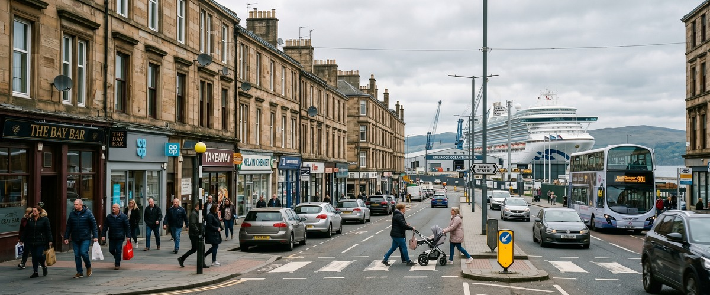
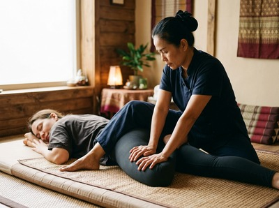

Greenock Ocean Terminal sits on the town's waterfront esplanade along the River Clyde, one of the most recognisable landmarks in Inverclyde.

The area draws port workers, cruise staff, hospitality professionals at nearby venues like Scotts Greenock, and local residents close to the shorefront. If you're looking for thai massage near Greenock Ocean Terminal, Thai Massage Greenock on South Street is just a short walk or quick taxi ride away.
South Street is easy to reach from the waterfront. It doesn't matter if you're finishing a shift, stepping off a vessel, or just based in this part of town. A therapeutic session is easy to fit into your day.

Port and hospitality work is hard on the body. Long hours on your feet, heavy lifting, and repetitive movement all take a toll. Thai Massage Greenock is well suited to exactly that kind of strain. You can book your session online before you even leave the waterfront.
Thai Massage Greenock offers a full range of authentic Thai treatments. Each one is delivered personally by Jariya Malone, a therapist trained at Bangkok's Wat Po temple. Whether you need deep muscle relief, recovery after physical work, or time to decompress, there is a treatment suited to your needs.
The simplest option is to walk into town along the esplanade toward the centre. South Street is easy to find on foot. The journey takes around ten to fifteen minutes at a steady pace.
If you prefer the bus, several McGill's routes serve the Ocean Terminal area and run into Greenock town centre. Greenock Central station is within walking distance of both the terminal and South Street. Taxis from the terminal rank reach South Street in just a few minutes.
Jariya Malone has been delivering authentic Thai massage in Greenock for years. Her training at Wat Po in Bangkok is the foundation of every treatment she gives. Wat Po is one of the world's most respected centres for traditional Thai massage. Every session is personal, with treatment notes kept for each client so each visit builds on the last.
Thai Sports Massage is well matched to the demands of port and hospitality work. It targets muscle fatigue, back pain, and the postural strain that builds over a working week. You can arrange your appointment online and choose a time that suits your schedule.
Greenock is a town in Inverclyde, in the west central Lowlands of Scotland. It serves as the base for Inverclyde Council. The Ocean Terminal is one of Scotland's leading west coast port facilities. It welcomes cruise liners and container traffic and sits at the heart of the town's working waterfront. For more background on the area, visit Greenock on Wikipedia.
Thai Massage Greenock is on South Street in Greenock town centre. It is around ten to fifteen minutes on foot from the Ocean Terminal esplanade. By taxi, the journey takes just a few minutes. It is a convenient option whether you are finishing a shift at the waterfront or spending time in town.
Walking along the waterfront into town is the most direct route. It takes around ten to fifteen minutes. Several McGill's bus routes serve the Ocean Terminal area and connect with Greenock town centre. Greenock Central station is within easy walking distance of both the terminal and South Street. Taxis are also available directly from the terminal.
Thai Sports Massage is a strong fit for people in physical roles. It targets muscle fatigue, eases back pain, and tackles postural strain from long shifts or repetitive tasks. Traditional Thai Massage, which uses acupressure and assisted stretching, is also highly effective for whole-body tension built up through physical work.
Same-day appointments are available subject to availability. The easiest way to check and secure a time is through the online booking form. You can also call the studio on 01475 600868 to ask directly about availability.
Thai Massage Greenock offers flexible appointment times to fit around working schedules, including morning and evening slots. Check the booking form online or call 01475 600868 for current hours.